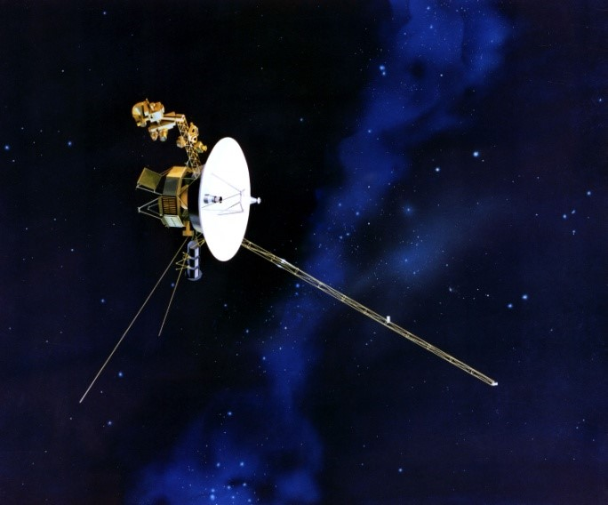

Highlights
USA
-
NASA's best space science mission? The one humans got to tag along on, of course! Not only was sending a man to the moon monumental for human history, but the Apollo trips were the first to bring celestial stuff back to Earth and greatly advanced our scientific understanding of the moon. Read more... -
Pioneer 10 and Pioneer 11, launched in 1972 and 1973, respectively, were the first spacecraft to visit the solar system's most photogenic gas giants, Jupiter and Saturn. Pioneer 10 was the first probe to travel through the solar system's asteroid belt, a field of orbiting rocks between Mars and Jupiter. Read more... -
When NASA's Viking 1 probe touched-down on Mars in July 1976, it was the first time a man-made object had soft-landed on the red planet. (Though the Soviet Mars 2 and 3 probes did land on the surface, they failed upon landing). Read more... -

Shortly after the Pioneers made their flybys, the Voyager 1 and Voyager 2 probes followed. They made many important discoveries about Jupiter and Saturn, including rings around Jupiter and the presence of volcanism on Jupiter's moon, Io. Voyager went on to make the first... Read more... -
The most-loved of all NASA spacecraft, the Hubble Space Telescope has name recognition around the world. Its photos have changed the way everyday people figure themselves into the cosmos. Read more... -

This joint NASA/ESA spacecraft, launched in 1997, reached its destination, Saturn, in 2004. Since then it has been in orbit around the ringed world, taking one stunning snapshot after another of the planets rings, moons and weather... Read more... -

Since 1999, the Chandra X-ray Observatory has been scanning the skies in X-ray light, looking at some of the most distant and bizarre astronomical events. Because Earth's pesky atmosphere blocks out most X-rays, astronomers couldn't view the universe in this high-energy,... Read more... -
The Wilkinson Microwave Anisotropy Probe (WMAP), launched in 2001, may not be as well-known, but it measures with unprecedented accuracy the temperature of the radiation left over from the Big Bang. By mapping out the fluctuations in the so-called... Read more... -

Another spacecraft with a profound effect on cosmology and astrophysics is the Spitzer Space Telescope, which observed the heavens through infrared light. This light, which has a longer wavelength than visual light, is mostly blocked by Earth's atmosphere... Read more... -

Intended for just a 90-day mission, these workhorse Mars rovers have far outdone themselves, and are still chugging away on the red planet more than five years after landing. Spirit and Opportunity, the twin Mars Exploration Rovers, landed on opposite sides of the planet in January 2004. Since then, Read more...